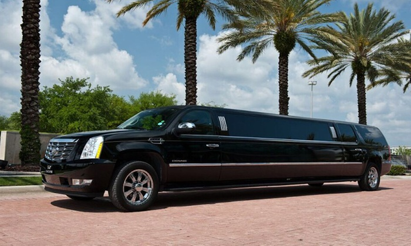
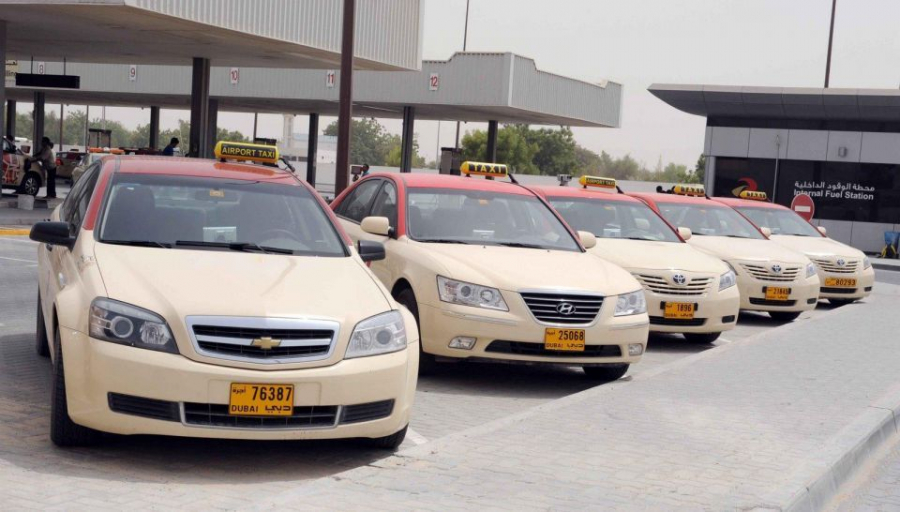
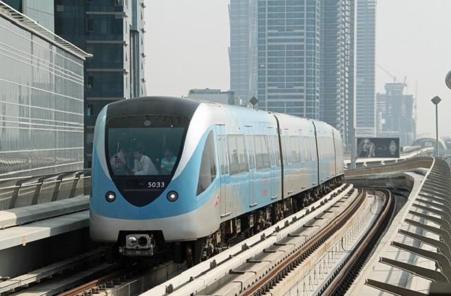
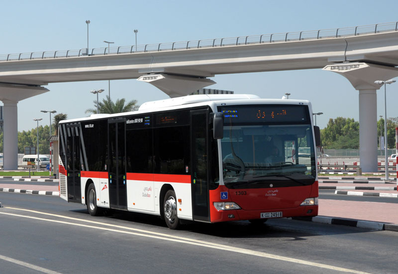

Travel by Car
Rent a Car

To hire a car, you need an international driver’s licence, passport, credit card and third-party insurance. Once you’re on the open road, take a drive out to Dubai’s mountain town of Hatta.
Want to get in on the luxury car action? One of Dubai’s favourite past times is cruising down the streets in style in a car that turns heads;
opt for a Bentley with Paddock Rent A Car or a Bugatti with Apex Luxury Car Hire, we have all to offer.
Looking for ultimate flexibility? Try a pay-as-you-go car rental app, like UDrive or ekar.
Travel by Taxi
Hail a Taxi

UAE taxis are available to hail nearly everywhere at just about any time, day or night.
While taxis are reasonably priced in Dubai and around UAE, the price per kilometre does change depending on a few factors, like tolls or the time of day.
If you prefer to use an app to book a ride, Uber or Careem are available. Feeling extravagant? Book an Uber chopper for a bird’s-eye commute.
Travel by Rail
Dubai Metro

Our metro is a world-class, fully-automated, driverless railway system. Most of the metro rides above ground providing a great view while you travel to landmarks like like the Dubai Mall, Dubai Marina, the Gold Souk and Dubai's financial district (DIFC).
Dubai Metro tickets must be purchased in the form of a Nol card – which can also be used to pay for bus, tram and taxi fare – and rides can cost as little as AED3.
Dubai Tram
The Dubai Tram runs from Al Sufouh to Jumeirah Beach Residences in 42 minutes. Running on the Nol card, the tram provides access to destinations like Palm Jumeirah,
Dubai Marina, Jumeirah Lakes Towers and more.
The Palm Monorail
The tram connects directly to the Palm's monorail station, which runs from the trunk of the Palm to the iconic Atlantis, The Palm. Whether you're having a play day at
Aquaventure, making friends a Dolphin Bay, or enjoying the Boardwalk, don't miss the chance to take in views of the Gulf from the Palm's crescent.
Travel by Bus With nearly 1,500 buses circulating around the city and air conditioned shelters to keep you cool on your way, this is a great budget option for getting around. Travel like a resident on the city bus or book an open-top hop-on, hop-off bus tour to hit the main tourist sites.
All the Seven Emirates are well connected by Inter City Bus Service.

Dhow Boats and Abras
Travel back in time on Dubai's traditional mode of transportation: an abra ride down Dubai Creek or through Souk Madinat Jumeirah. Enjoy a dinner cruise on the much
larger dhow boat, a vessel used traditionally for sailing. For a modern view, travel down the cosmopolitan passages of Dubai Marina or the brand-new Dubai Water Canal.
Ferry and Water Taxi
Another way to take in the sights is aboard the Dubai Ferry. Starting at just AED15, visitors can take a tour across the city’s key water links starting from Business Bay to the Marina via Dubai Canal. Ferries from the Al Jaddaf station depart daily at 10am, 12pm and 5:30pm.